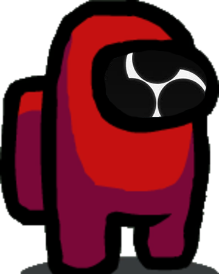

Connecting...
[How to use?]
1. Add this webpage in OBS
(settings)
2. Download
AmongusCapture
form
here
(if you not have .NET Core installed, you can get that
here
)
3. Open
AmongusCapture
enter URL:
Connecting...
and enter Connect Code:
Connecting...
and click Connect!
4. Open Amongus game and enjoy your stream!
Want to customize like add kill feed, player status?
You can download sourcecode and customize here!
Reconnecting to server...
If not working please reload this page!